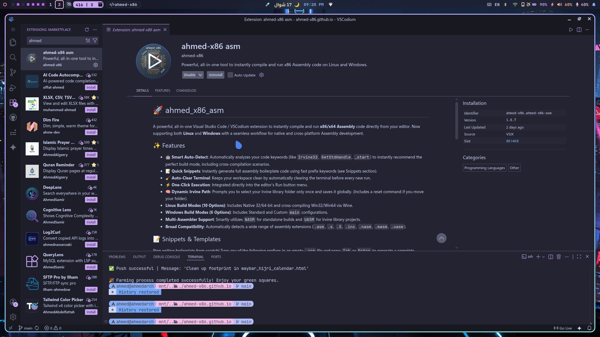

✨ Key Features
- Smart Auto-Detect: Instantly analyzes your
.asmcode to determine the optimal build configuration (32-bit/64-bit, Irvine/Native,main/_start). - True Cross-Platform: Runs seamlessly on Linux (Native & Wine) and Windows (Native MSYS2) directly from your editor.
- macOS Assembly on Linux (New!): Compile and run macOS Mach-O 32-bit and 64-bit Assembly code directly on your Linux machine using
osxcrossandDarling. - Irvine32 Support: First-class integration for the
Irvine32.inclibrary, featuring a persistent path saver for a hassle-free setup. - Integrated Terminal: Automatically spawns a dedicated clean terminal and clears previous execution outputs.
- Multi-Toolchain Magic: Seamlessly orchestrates NASM, GCC, LD, UASM, and Apple Darwin linkers in the background.
🛠️ Requirements & Dependencies
Before using the extension, you need to install the required tools based on your operating system.
🍎 macOS Dependencies
To natively compile and run ARM64 assembly on your Apple Silicon Mac, simply ensure you have the Xcode Command Line Tools installed (which provides clang, as, and ld):
xcode-select --install🪟 Windows (Using MSYS2)
If you don't have it installed, download and install MSYS2 first. Then, open your MSYS2 terminal and run the pacman command to install the required assemblers and linkers:
⚠️ Important Note:Please download MSYS2 ONLY from the official website using the button below to avoid missing dependencies or tampered binaries and copy this command.
pacman -S mingw-w64-i686-gcc mingw-w64-ucrt-x86_64-gcc mingw-w64-ucrt-x86_64-gdb mingw-w64-x86_64-nasm make p7zip mingw-w64-x86_64-uasm🐧 Linux Dependencies
Choose your Linux distribution below to install the required dependencies (nasm, mingw-w64, wine, uasm, binutils, ghex, etc.).
Arch Linux / Manjaro / CachyOS
sudo pacman -S --needed nasm mingw-w64-gcc wine binutils ghex unzip curl
yay -S --needed uasmDebian / Ubuntu / Linux Mint
sudo apt update && sudo apt install -y nasm gcc-mingw-w64 wine binutils ghex unzip curlFedora / Nobara / Bazzit
sudo dnf install -y nasm mingw64-gcc wine binutils ghex unzip curlVoid Linux
sudo xbps-install -S nasm cross-x86_64-w64-mingw32-gcc wine binutils ghex unzip curlGentoo
sudo emerge --ask dev-lang/nasm dev-util/mingw64-toolchain app-emulation/wine-vanilla sys-devel/binutils dev-util/ghex app-arch/unzip net-misc/curlSolus
sudo eopkg install nasm mingw-w64 wine binutils ghex unzip curlopenSUSE
sudo zypper install -y nasm mingw64-gcc wine binutils ghex unzip curlAlpine Linux
sudo apk add --no-cache nasm mingw-w64-gcc wine binutils ghex unzip curl sedPuppy Linux
pkg install nasm mingw-w64-gcc wine binutils ghex unzip curl⚠️ UASM Manual Installation:If your distribution does not have
uasmin its official repositories, download and install it manually:curl -fsSL https://www.terraspace.co.uk/uasm257_linux64.zip -o uasm_linux.zip unzip -q uasm_linux.zip -d uasm_temp sudo mv uasm_temp/uasm /usr/local/bin/ sudo chmod +x /usr/local/bin/uasm rm -rf uasm_linux.zip uasm_tempSHA256:
d9fecb2226f66c7e48d81402fc13a67eda23507be9067a2983ee14ec7d68a94f
🦾 ARM Execution on x86-64
Native-like ARM Support on ArchLinuxThe extension supports running ARM architecture code seamlessly on your x86-64 machine. Make sure to install the required toolchains:
sudo pacman -S aarch64-linux-gnu-binutils sudo pacman -S arm-none-eabi-binutils arm-none-eabi-gcc
🪐 RISC-V Execution & Cross-Compilation
Run RISC-V 32/64/128-bit on Arch LinuxTo enable full RISC-V support (including the experimental 128-bit mode) on your Arch-based system, install the GNU toolchain and QEMU emulators:
sudo pacman -S riscv64-linux-gnu-binutils qemu-user-static sudo pacman -S riscv64-linux-gnu-gcc riscv64-linux-gnu-glibc sudo pacman -S qemu-user
🍎 The Mach-O Bridge
macOS Cross-Compilation & Execution on Arch Linux⚠️ Note: Currently, running macOS code is officially tested and supported ONLY on Arch Linux.
This guide documents the complete workflow to transform an Arch Linux system into a full-blown development environment capable of Assembling, Linking, and Running macOS binaries (Mach-O format) natively on Linux.
🚀 Phase 1: Initial AUR Setup & Darling Environment
We begin by attempting to install the core components from the Arch User Repository (AUR).
# Using 'yay' to fetch the runner and the cross-linker yay -S darling-bin osxcross-git🔹 What Happened?
- Darling Success:
darling-bin(the Darwin/macOS emulation layer) installed successfully as a pre-compiled package.- osxcross Failure: The
osxcross-gitpackage failed due to a 404 Not Found error.
- Reason: The AUR package relies on a dead link for the
MacOSX10.11.sdk. Apple frequently removes older SDKs from its servers.🔹 Activating the Darling Kernel (Optional/User-space)
To ensure the environment is ready for execution, you might need to enable the kernel module or initialize the userspace server:
# Note: Modern Darling uses a userspace server (darlingserver), # but legacy installs might require the kernel module: yay -S darling-mach-dkms-git sudo modprobe darling-mach
🛠️ Phase 2: Manual Construction of
osxcrossTo bypass the dead SDK links, we manually build
osxcrossusing a modern SDK (11.3).1. Install Essential Dependencies
sudo pacman -S --needed clang cmake libxml2 zlib openssl pbzip2 mpdecimal2. Clone the Official Repository
git clone https://github.com/tpoechtrager/osxcross.git cd osxcross3. Fetching the SDK "The Manual Way"
We download the
MacOSX11.3.sdkfrom a verified mirror and place it in thetarballs/directory:wget -nc https://github.com/joseluisq/macosx-sdks/releases/download/11.3/MacOSX11.3.sdk.tar.xz -P tarballs/4. Initiate the Build Process
Run the build script in unattended mode (this takes several minutes depending on CPU power):
UNATTENDED=1 ./build.sh
⚙️ Phase 3: System Integration & Global Configuration
Once built, we must make the macOS tools available system-wide and ensure the linker can find its shared libraries.
1. Copying to Global Binaries
sudo cp -r target/bin/* /usr/local/bin/ sudo cp -r target/lib/* /usr/local/lib/ sudo mkdir -p /usr/local/SDK/ sudo cp -r target/SDK/* /usr/local/SDK/ 2>/dev/null || true2. Resolving Shared Library Issues (
libtapi,libxar)If the linker fails to find shared objects, we must register
/usr/local/libin the system's dynamic linker cache:# Create a new configuration file for local libraries echo "/usr/local/lib" | sudo tee /etc/ld.so.conf.d/usr-local.conf # Update the linker cache sudo ldconfig
✅ Environment Verification
To confirm that your Linux system can now generate macOS binaries, verify the linker version:
x86_64-apple-darwin20.4-ld -v> Result: If the version info (e.g.,
PROJECT:ld64-711) appears without errors, your Arch-macOS Gateway is officially open! 🌍🔥
Summary of Build Commands (for extension.ts)
Step Command Assemble nasm -f macho64 code.asm -o code.oLink x86_64-apple-darwin20.4-ld code.o -o code -macosx_version_min 10.11 -lSystem -syslibroot /usr/local/SDK/MacOSX11.3.sdkRun darling shell ./code
The BSD Gateway
FreeBSD Cross-Compilation & Emulation on Arch LinuxThis guide documents the streamlined process of turning an Arch Linux system into a development hub for FreeBSD 64-bit Assembly, enabling you to build and test BSD binaries without leaving your Linux environment.
🚀 Phase 1: Installing the Universal Linker (LLD)
Instead of building complex cross-binutils, we leverage LLVM's LLD, which natively supports multiple targets including FreeBSD.
# Install the LLVM Linker sudo pacman -S --needed lld🛠️ Phase 2: Installing the Execution Bridge (QEMU)
To run FreeBSD binaries on the Linux kernel, we use QEMU in User-Mode emulation. This acts as a translator between BSD system calls and Linux system calls.
# Install QEMU User Static emulators sudo pacman -S --needed qemu-user-static
⚙️ Phase 3: Build & Execution Workflow
To target FreeBSD 64-bit, follow this specific toolchain sequence:
1. Assembling (NASM)
We use the standard ELF64 format, as it is the foundation for FreeBSD executables.
nasm -f elf64 code.asm -o code.o2. Linking (LLD)
We must explicitly tell the linker to use the FreeBSD emulation mode (
elf_x86_64_fbsd).ld.lld -m elf_x86_64_fbsd code.o -o code3. Execution (QEMU)
Run the resulting binary through the QEMU x86_64 static interpreter.
qemu-x86_64-static ./code
✅ Technical Summary for
extension.ts
Platform Component Tool / Configuration Target OS FreeBSD 64-bit Linker ld.lldEmulation Mode -m elf_x86_64_fbsdRunner qemu-x86_64-static> Note: As of April 2026, this feature is officially optimized for Arch Linux users of the
ahmed_x86_asmextension.
🪟 Developing for Windows ARM64 on Arch Linux
To develop, compile, and link Assembly code specifically for the Windows ARM64 architecture while using Arch Linux, you must install the LLVM-based MinGW toolchain. Standard GCC-MinGW packages typically only support x86 and x86_64.
The following package provides the necessary cross-compilation tools (like
clangandlld) to target the Windows ARM64 environment and its unique Calling Convention.Prerequisites
yay -S llvm-mingw-w64-toolchain-ucrt-binCompilation Command
Once installed, you can compile your Assembly files using the following command structure. This tells the compiler to bypass standard startup files and specifically target the ARM64 entry point:
/opt/llvm-mingw/llvm-mingw-ucrt/bin/aarch64-w64-mingw32-clang "your_file.s" -o "your_file.exe" -nostartfiles -lkernel32 -Wl,-e_start> Physics Note: Please note that while this allows you to build the binary on Arch Linux, executing it requires a native Windows ARM64 environment or highly specific hardware emulation, as it is physically impossible to run ARM64 Windows instructions directly on an x86_64 processor without a translation layer.
📜 Supported Snippets & Templates
Use these snippet prefixes in VS Code to instantly generate boilerplate code for your desired architecture and OS.
⚠️ OS & Platform Support Notice
🐧 Arch Linux: All templates and advanced cross-compilation features (macOS, FreeBSD, Linux ARM, Windows ARM, RISC-V) are currently optimized and fully supported ONLY on Arch Linux. It's not my fault that Arch is the paradise for low-level programmers! 🤷♂️😎
🐧 Other Linux Distros: Officially support only the Linux Native Templates and Windows API / Standalone Templates.
🪟 Windows Native: Windows users can only use the Windows API / Standalone Templates.
🪐 RISC-V Templates
| Prefix | Description |
|---|---|
linux-riscv128-start |
Linux RISC-V 128-bit (RV128) boilerplate using GNU Assembler (GAS) |
linux-riscv128-main |
Linux RISC-V 128-bit (RV128) boilerplate using main |
linux-riscv64-start |
Linux RISC-V 64-bit boilerplate using GNU Assembler (GAS) |
linux-riscv64-main |
Linux RISC-V 64-bit boilerplate using main entry point |
linux-riscv32-start |
Linux RISC-V 32-bit (RV32I) boilerplate using GNU Assembler (GAS) |
linux-riscv32-main |
Linux RISC-V 32-bit (RV32I) boilerplate using main (No C-Lib) |
linux-riscv32e-start |
Linux RISC-V 32-bit Embedded (RV32E) boilerplate using _start |
linux-riscv32e-main |
Linux RISC-V 32-bit Embedded (RV32E) boilerplate using main (No C-Lib) |
🦾 ARM Templates
| Prefix | Description |
|---|---|
linux-arm32-main | Linux ARM32 (AArch32) boilerplate using main |
linux-arm64-main | Linux ARM64 (AArch64) boilerplate using main |
linux-arm32-start | Linux ARM32 (AArch32) boilerplate using GNU Assembler (GAS) |
linux-arm64-start | Linux ARM64 (AArch64) boilerplate using GNU Assembler (GAS) |
win-arm64-start | Windows ARM64 boilerplate using _start (Cross-compile only) |
win-arm64-main | Windows ARM64 boilerplate using C-style main (Cross-compile only) |
win-arm32-start | Windows ARM32 boilerplate using _start (Cross-compile only) |
win-arm32-main | Windows ARM32 boilerplate using C-style main (Cross-compile only) |
FreeBSD Templates
| Prefix | Description |
|---|---|
freebsd64-start | FreeBSD 64-bit boilerplate using Raw Syscalls and _start |
freebsd64-main | FreeBSD 64-bit boilerplate using main |
freebsd32-start | FreeBSD 32-bit boilerplate using Stack Syscalls and _start |
freebsd32-main | FreeBSD 32-bit boilerplate using Stack Syscalls and main |
🍎 macOS (Mach-O) Templates
| Prefix | Description |
|---|---|
mac64-main | macOS 64-bit boilerplate using Apple official _main and libSystem |
mac-arm64-main | macOS ARM64 (Apple Silicon) boilerplate using _main |
🐧 Linux Native Templates
| Prefix | Description |
|---|---|
linux32-main | Linux 32-bit boilerplate using main |
linux32-start | Linux 32-bit boilerplate using _start |
linux64-main | Linux 64-bit boilerplate using main |
linux64-start / arch-start | Linux 64-bit boilerplate using _start (Prints "i use Archlinux BTW") |
🪟 Windows API / Standalone Templates
| Prefix | Description |
|---|---|
win32-std-main | Win32 pure Windows API using main |
win32-std-start | Win32 pure Windows API using _start |
win64-std-main | Win64 pure Windows API using main |
win64-std-start | Win64 pure Windows API using _start |
win32-std-main-irvin | Win32 pure Windows API using main with Irvine32 |
win32-std-start-irvin | Win32 pure Windows API using _start with Irvine32 |
📚 Irvine32 Library (Optional but recommended)
If your project uses the Irvine32 library, download it, extract it to a known folder, and the extension will handle the linking automatically.
⚙️ How to Use
- Install the extension from the VS Code Marketplace.
- Open any
.asmfile in VS Code. - Run Code: Simply click the ▶ Play button in the top right corner of the editor and select Run x86 Assembly (ahmed_x86). Alternatively, you can open the Command Palette (
Ctrl+Shift+P) and typeAhmed x86 ASM: Run Code. - The extension will Auto-Detect the best environment. Press Enter, and watch your code compile and run in the terminal!
- Irvine32 Setup: The extension will prompt you to select the folder containing
Irvine32.libonly the very first time you need it. - Reset Path: To change the Irvine library path later, press
Ctrl+Shift+Pand search forAhmed x86 ASM: Reset Irvine Library Path.